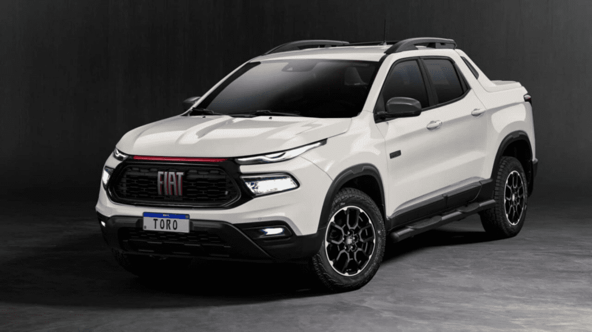
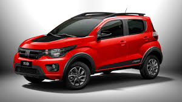
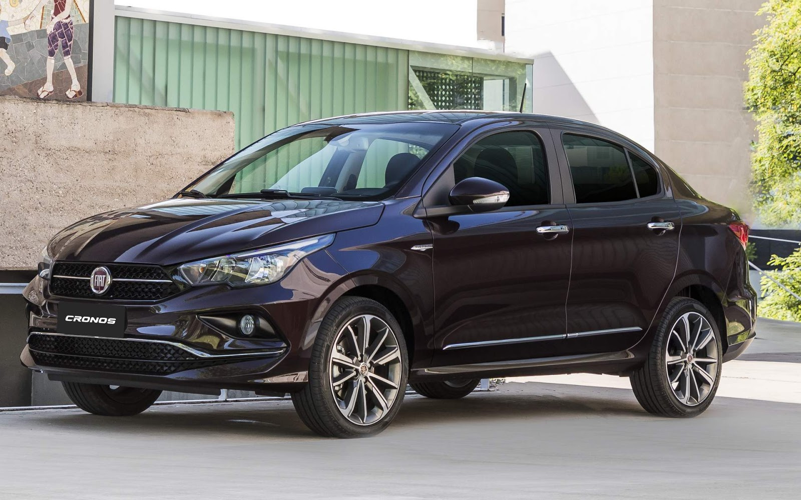
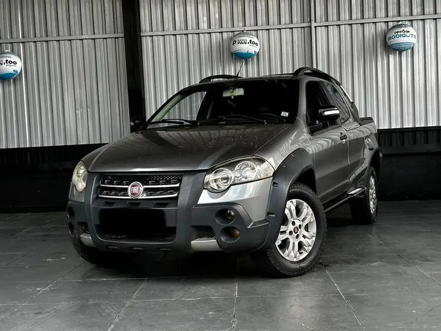

Serviços Fiat
Serviços Fiat




Serviços de Freios
- Inspeção completa do sistema de freios, incluindo pastilhas, discos, tambores, fluido e mangueiras, para garantir a segurança e a eficiência da frenagem do seu veículo.
- Reparo e substituição de componentes desgastados ou danificados do sistema de freios, como troca de pastilhas, discos, retífica de tambores e sangria do fluido de freio.
Serviços de Elétrica Automotiva
- Diagnóstico e reparo de problemas elétricos, como falhas na bateria, alternador, motor de partida, iluminação (faróis, lanternas), sistema de ignição e outros componentes eletrônicos do veículo.
- Instalação de acessórios elétricos, como alarmes, travas elétricas, vidros elétricos, som automotivo e rastreadores, seguindo as normas de segurança e as especificações do fabricante.
Serviços de Ar Condicionado Automotivo
- Recarga de gás refrigerante, verificação de vazamentos no sistema, limpeza e higienização do ar condicionado para garantir o conforto térmico e a qualidade do ar dentro do veículo.
- Reparo e substituição de componentes do sistema de ar condicionado, como compressor, condensador, evaporador e válvulas, para restaurar o funcionamento adequado do sistema.
Serviços de Funilaria e Pintura
- Reparo de danos na lataria do veículo, como amassados, arranhões e ferrugem, utilizando técnicas de funilaria para restaurar a forma original das peças.
- Serviços de pintura automotiva, incluindo pintura completa, parcial e retoques, com correspondência de cores e acabamento de alta qualidade.
Ajuste de suspensão
- Ajustes de suspensão personalizados para melhorar o manuseio e o conforto de condução adaptados às suas preferências de direção.
- Garante desempenho ideal em diversas condições de estrada.
Serviços de Escapamento
- Inspeção do sistema de escapamento para identificar furos, ferrugem e catalisadores danificados, que podem comprometer o desempenho do veículo e aumentar a emissão de poluentes.
- Reparo e substituição de peças do escapamento, como tubos, silenciosos e catalisadores, garantindo o correto funcionamento do sistema e a conformidade com as normas ambientais.
Serviços de Direção Hidráulica
- Verificação do nível e da condição do fluido da direção hidráulica, inspeção de vazamentos e ruídos na bomba e na caixa de direção.
- Reparo e substituição de componentes da direção hidráulica, como bomba, caixa de direção e mangueiras, para garantir a leveza e a precisão da direção.
Serviços de Limpeza e Higienização Veicular
- Lavagem completa da parte externa e interna do veículo, incluindo aspiração, limpeza de painel, vidros e estofados.
- Serviços de higienização interna, como limpeza do sistema de ar condicionado, eliminação de odores e aplicação de produtos antibacterianos para um ambiente mais saudável.